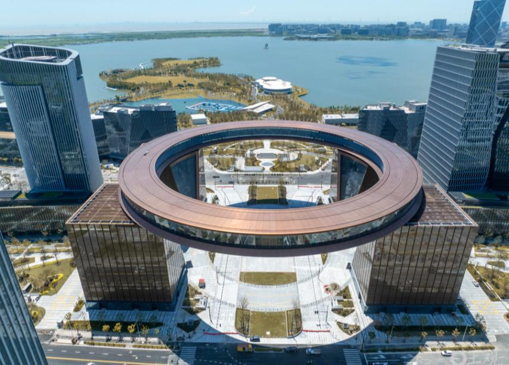
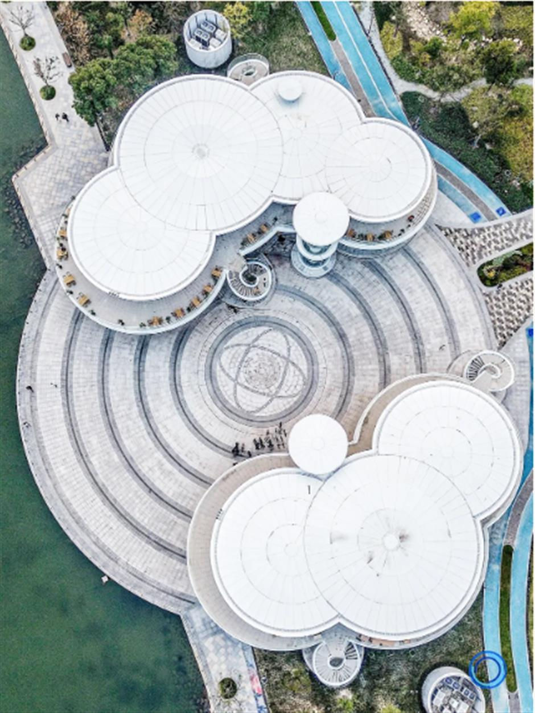
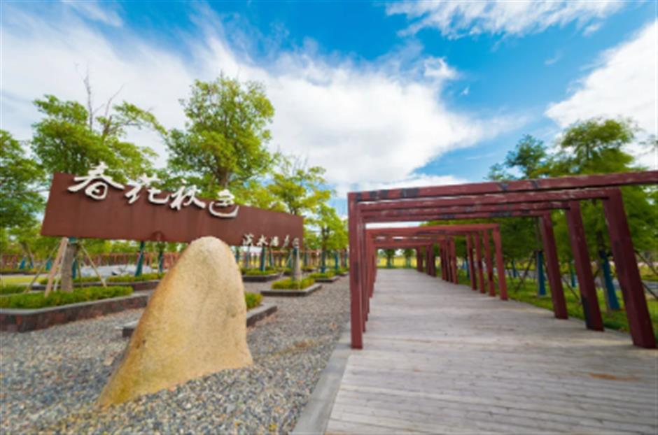

从空中看滴水湖金融湾，湖对岸的天际线已经长起来了。摄影：解放日报 孟雨涵
上海的秋天很短。短到你还没想好周末去哪，梧桐叶就落完了。
所以上周六早上七点半，我坐上了16号线，一路往东，坐到终点站。出站抬头，天低得不像上海，云像刚洗过，风里有一股咸味。
这里是滴水湖。上海最东边，也是最容易被市区人忘掉的一个湖。
但它真的是个骑行好地方。
01
先认清两个圈
滴水湖是圆的，圆得很规整。贴着湖水的环湖一路，骑一整圈是8公里。慢慢骑四十分钟，赶时间半小时也能绕完。路面平整，几乎没坡，湖一直在你右手边。
但网上说的“滴水湖40公里”，指的是另一条线，大家叫它“棒棒糖”——一根棍子加三个圈。棍子是海港大道往返，三个圈是环湖一路、二路、三路，一圈比一圈大。
完整走法大概是这样：洲际酒店出发，环湖一路南下，经过一尺花园、壹号码头、朵云书院，转上海港大道，接环湖二路，穿过春花秋色公园和星空之境海绵公园，再路过中国航海博物馆、南汇新城城市公园，绕到环湖三路，看一眼上海天文馆，最后经海港大道回到起点。
听着很唬人。所以第一次来，别硬上40公里。先把8公里的环湖一路骑舒服了，觉得不过瘾，再往外加圈。骑到一半没劲了，随时可以掉头，湖边没有哪一段是白骑的。
02
早上骑，和下午骑是两回事
这是我最想提醒的一句。周末九点以后，一号码头和七彩桥就开始排队拍照了。八点半之前出发，整条湖岸线基本是你的。
租车不用愁。16号线滴水湖站1号口附近就有租车点，共享单车也能骑。建议逆时针，湖在右手边，看水不用歪头。
还有几个细节，是骑过才知道的。
东港大道早间常有晨雾，能见度不高，前灯记得开。海堤段的风能到三四级，防风手套和面巾别嫌麻烦。东港大道到观海公园有一段缓坡，秋天早上路面有露水，下坡别冲。
我第一次去没带手套，骑到海堤手冻得握不住刹车。这不算什么大事，但确实影响心情。
03
路上值得停下来的四个地方
一尺花园（西岸店），环湖西一路858号。云朵形状的玻璃房落在码头上，六千多本书，七种景观。二楼临窗的位置最好，早上刚开门，几乎没人。

一尺花园西岸店，像一朵落在码头上的云。图片来源：乐游上海
壹号码头，环湖西一路1号。半开放的混凝土框架，人站在伞状的阴影底下，湖面蓝得像海。拍照别站台阶正中，往边上走两步，画面会干净很多。
朵云书院，港城广场文化艺术中心五楼。二十米的通天书架，七万册书沿着台阶往上铺。巨大的落地窗外就是湖。低头看书，抬头看湖，这句话在这儿不是文案。
春花秋色公园，环湖南二路。芦苇、草甸、水岸，一整片没什么人的野地。秋天来这儿最对，风一吹，芦苇穗子全往一个方向倒。

春花秋色公园入口，木栈道一直往里延伸。图片来源：乐游上海
想再走远一点，还有星空之境海绵公园、中国航海博物馆、上海天文馆。天文馆要提前预约，别骑到门口才发现进不去。
04
顺便说三件新事
骑到金融湾那一段，抬头会看见一个巨大的金色圆环。这是“荣耀之环”，直径153米，今年1月基本建成，底下有89万平方米商业空间。原来说上半年开放，现在开没开，你到现场看一眼就知道了。
第二件，市域铁路南汇支线今年8月全线结构贯通，34.86公里、6座车站，终点站就在滴水湖北站。以后从浦东机场过来，不用再绕一大圈。
第三件是给在这儿上班的人看的。8月的发布会上，临港说“十五五”期间会放宽落户、给重点用人单位更大的引才自主权；人才购房补贴也从9月21日起常态化申请。这些听着离骑行很远，但对住在这里的人来说，是每天傍晚能不能轻松来湖边散步的事。
滴水湖的好，
不在某一个景点，
在那段没什么人的路上。
骑完40公里，我在一号码头坐了很久。湖对岸的楼一栋栋亮起来，风还是咸的。市区那边大概已经在堵车了。
你在滴水湖骑过吗？哪一段最好看，或者哪家店值得专门停一下——留言区说说，下次我按你们的路线再骑一遍。
出行贴士
交通：地铁16号线至滴水湖站，1号口附近可租车
距离：环湖一路一圈8公里，完整“棒棒糖”线约40公里
时间：周末建议8:30前出发，避开拍照人流
装备：防风手套、面巾、车灯；带水，秋天也要防晒
顺路：一尺花园、壹号码头、朵云书院、春花秋色公园
— END —